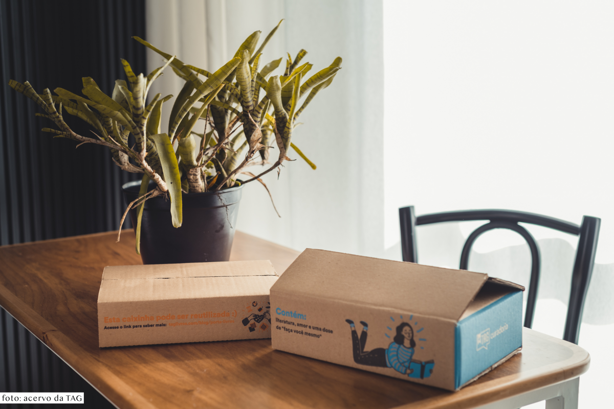

- LIVROS
- PUBLI
Como funciona um Clube de Assinatura de Livros (e minha experiência com a TAG)
20 DE NOVEMBRO DE 2018
Olá pessoal! Muita gente me pergunta como é participar de um Clube de Assinaturas, qual eu indico, etc., então hoje vim falar um pouquinho da minha experiência com a TAG que atualmente é o clube de assinaturas do qual eu faço parte. A TAG foi uma das primeiras empresas brasileiras a oferecer esse serviço de assinaturas, onde você paga um valor mensal (ou na opção anual) e todos os meses recebe em casa uma caixinha com um livro surpresa e itens extras. E a maior vantagem de se participar de um Clube como esse, na minha opinião, é justamente a surpresa! É receber um livro inusitado, que foi cuidadosamente selecionado pra você, e conhecer histórias que te façam sair da sua zona de conforto. Atualmente a TAG oferece duas modalidades de caixinhas pra você escolher, a TAG Curadoria e a TAG Inéditos. Em ambas caixinhas a TAG envia livros com...

Olá! Me chamo Ju Cirqueira e tenho 29 anos. Em 2013 eu criei esse espaço para falar sobre o que eu mais amo: o universo dos livros. Hoje além da literatura, compartilho por aqui experiências, ideias, e reflexões que tornem a vida mais leve.